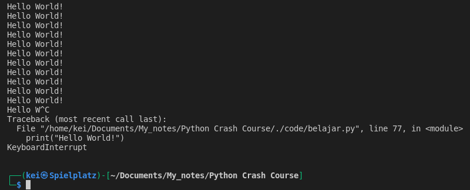
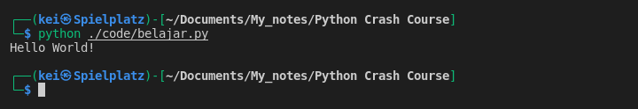
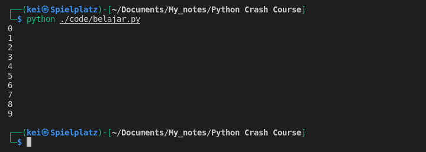
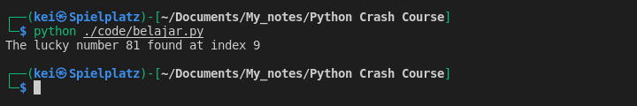

- While loop can also be use for iteration but while loop is typically use when looping over some condition
- Example of While loop
some_condition = True
while some_condition:
print("Hello World!")
– This code will have an infinite loop, basically it will run forever until the computer crash. It will stop when I hit Ctrl + C to interrupt it, or if there is a break keyword somewhere in the code block.

some_condition = True
while some_condition:
print("Hello World!")
break

- Another example of while loop,
– The code will stop running once the number is equal to 10
number = 0
while number < 10:
print(number)
number += 1

- Example using while loop to find a certain number within a range
from random import randint
numbers = [randint(1,100) for number in range(200)]
iteration = 0
lucky_number = 81
while iteration < len(numbers):
if numbers[iteration] == lucky_number:
print(f"The lucky number {lucky_number} found at index {iteration}")
break
iteration += 1
